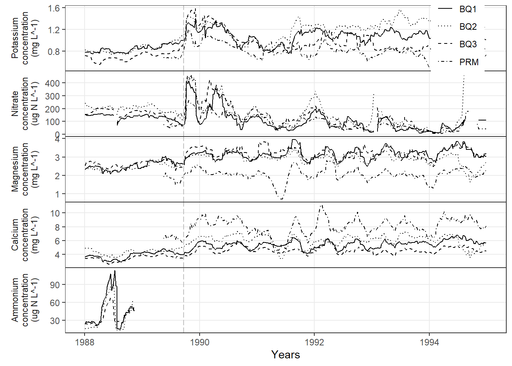

Code
library(tidyverse)
all_sites_df <- read_csv(here::here("data", "processed_data", "cleaned_data.csv"))
# Collapse values and calculate moving average
long <- all_sites_df %>%
# Make a column named compound to hold the chemical name
pivot_longer(cols = c(K, "NO3-N", Mg, Ca, "NH4-N"), names_to = "compound", values_to = "value") %>%
# Make the compound and site column values categorical
mutate(
compound = factor(compound, levels = unique(compound)),
site = factor(site, levels = unique(site))
) %>%
# Group by site compound and date
group_by(site, compound, date) %>%
# Collapse multiple values with same date, site, compound by selecting the median value
summarize(
value = find_median(value)
) %>%
# order by date within the site/compound groups
arrange(date, .by_group = TRUE) %>%
# Add column for the rolling means using the calc_moving_avg function
mutate(rolling_means = calc_moving_avg(date, value))
# Save df with moving average column
write_csv(long, here::here("data", "processed_data","clean_data_ma.csv"))
# Make the plot
p <- ggplot(long, aes(x = date, y = rolling_means, linetype = site)) +
# Draw the time series lines; drop rows with NA y values
geom_line(na.rm = TRUE) +
# Use specific line types for each site; keeps legend readable
scale_linetype_manual(values = c("solid", "dotted", "dashed", "dotdash")) +
# Add a vertical line for Hurricane Hugo (Sept 22, 1989)
geom_vline(
xintercept = as.POSIXct("1989-09-22", tz = "UTC"),
linetype = "longdash",
color = "grey"
) +
# Make a panel per compound, one column, free y scales
# Label strips on the left with readable text
facet_wrap(
~compound,
ncol = 1,
scales = "free_y",
strip.position = "left",
labeller = as_labeller(c(
"K" = "Potassium\nconcentration\n(mg L^-1)",
"NO3-N" = "Nitrate\nconcentration\n(ug N L^-1)",
"Mg" = "Magnesium\nconcentration\n(mg L^-1)",
"Ca" = "Calcium\nconcentration\n(mg L^-1)",
"NH4-N" = "Ammonium\nconcentration\n(ug N L^-1)"
))
) +
# Axis labels; y is NULL because each panel title carries units
labs(x = "Years", y = NULL) +
# Baseline black and white theme
theme_bw() +
# Tidy up grid and strip placement
theme(
panel.grid.minor = element_blank(), # hide minor grid lines
strip.background = element_blank(), # remove strip background
strip.text.y.left = element_text(), # keep left strip text
strip.placement = "outside", # place strips outside panel
panel.spacing.y = grid::unit(0, "lines"), # no vertical spacing between panels
legend.title = element_blank(), # no legend title
legend.position = c(0.89, 0.91) # place legend inside plot
)
ggsave(
filename = here::here("output", "replica_plot.png"),
width = 1560, height = 2167, units = "px"
)
p